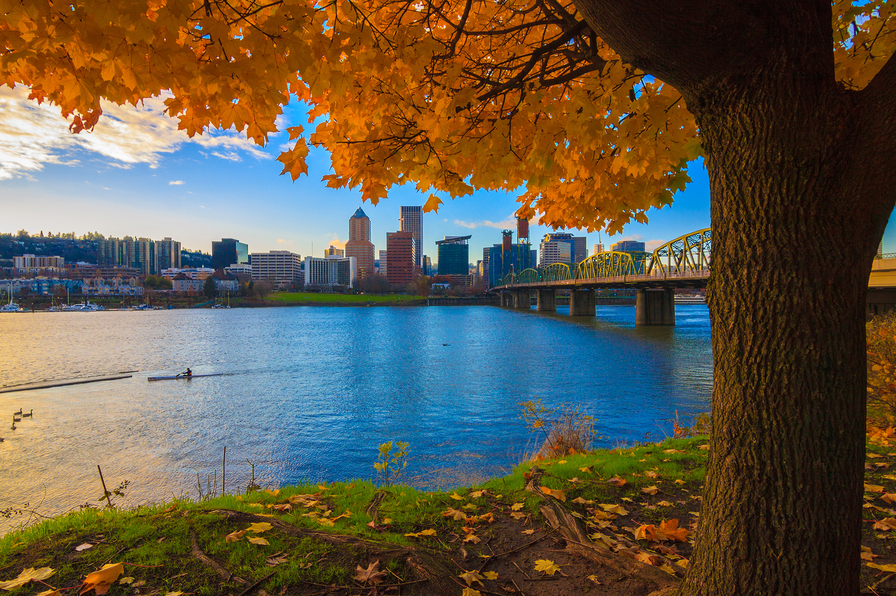
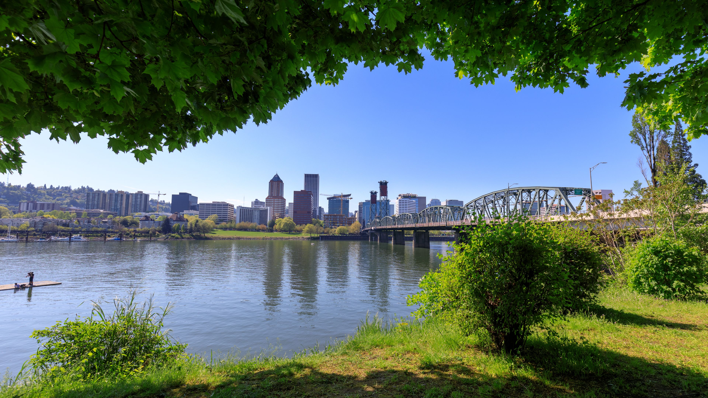

About Portland
Welcome to Portland, Oregon—where eclectic charm meets urban sophistication in the heart of the Pacific Northwest. Known for its vibrant arts scene, Portland is a haven for creativity and innovation. Explore the city’s diverse neighborhoods, from the trendy boutiques of the Pearl District to the historic streets of Old Town. Don’t miss the iconic Powell’s City of Books, a bibliophile’s paradise, and the bustling Portland Saturday Market, where local artisans showcase their unique crafts and culinary delights. For a taste of Portland’s famous food scene, dive into the city’s renowned food carts and farm-to-table restaurants offering a fusion of flavors.
Nature enthusiasts will find plenty to adore in Portland’s expansive green spaces. Discover the lush beauty of Washington Park, home to the Portland Japanese Garden and the Oregon Zoo, or enjoy a peaceful stroll through Forest Park, one of the largest urban forests in the U.S. 
With its commitment to sustainability and a vibrant cultural landscape, Portland is a dynamic destination where you can enjoy both urban excitement and serene natural retreats. Come experience the energy and charm that make Portland truly one of a kind.
| Job | Median Base Salary | Maximum Base Salary | Growth Rate |
|---|---|---|---|
| Junior Software Enigneer | $74,000 | $108,000 | -11% |
| Project Manager | $84,000 | $110,000 | 6% |
| Litigation Paralegal | $78,000 | $85,000 | 4% |